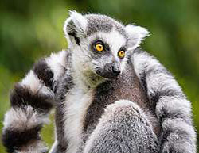
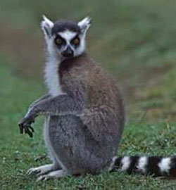

Lémur Catta


Le Lémur Catta plus connu sous le nom de Maki, est un espèce endémique de Madagascar classé comme l’un des animaux les plus menacés au monde, c’est un primate appartenant à la famille des Lemuridae.
les Maki vivent en groupes se trouvant en général dans la partie sud de Madagascar, facilement reconnaissable par queue annelée de blanc et de noir, il est le plus connu et le plus emblématique de l’île représentant du genre Lemur, d’où le nom donné à ces primates.
L’animal est omnivore et s’adapte facilement autant sur terre que dans les arbres…